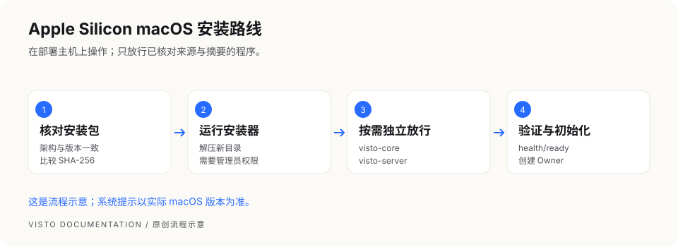

文档中心/安装与初始化
VISTO USER GUIDE / 05
Apple Silicon macOS 安装
用户手册2026-10-03Server 浏览器工作台
本章适用于已经取得对应 macOS ARM64 安装包的维护者。命令中的 <版本> 是占位符，必须替换成你下载的版本；尖括号也要去掉。所有操作都在部署 Visto 的 Mac 上完成。
1. 下载并核对 SHA-256
保存 Visto-Server_<版本>_macos-arm64.tar.gz 与同一次交付的 .sha256 文件。打开终端，进入下载目录后执行：
cd "$HOME/Downloads"
shasum -a 256 'Visto-Server_<版本>_macos-arm64.tar.gz'
把输出的 64 位摘要与官方发布页或 .sha256 内容逐字对照。不同则停止，不要安装。摘要相同证明下载内容一致，仍需要确认下载来源。
2. 解压到独立目录
新版本使用一个新目录，避免把旧包的脚本与新包混在一起：
mkdir -p "$HOME/Downloads/visto-server-<版本>"
tar -xzf "$HOME/Downloads/Visto-Server_<版本>_macos-arm64.tar.gz" \
-C "$HOME/Downloads/visto-server-<版本>"
cd "$HOME/Downloads/visto-server-<版本>"
确认当前目录里有 scripts/install-visto-server.sh，再执行安装：
sudo bash scripts/install-visto-server.sh \
--version '<版本>' \
--source-dir "$PWD"
终端输入系统管理员密码时不会显示字符，这是系统的正常行为。
3. 处理 macOS 首次运行提示
当前交付方案没有 Apple Developer ID 签名和公证。macOS 可能分别拦截 visto-core 和 visto-server。核对来源和摘要之后，在“系统设置 → 隐私与安全性”找到被阻止的程序，按系统提示“仍要打开”。如果第二个程序随后被拦截，对它单独操作。


这是流程示意，不是 macOS 截图。 手动放行不代表 Apple 已验证开发者。不要全局关闭 Gatekeeper。安装器如果报服务未就绪，先处理拦截再检查服务，不要把退出失败当成安装成功。
sudo launchctl kickstart -k system/com.visto.server
curl -fsS http://127.0.0.1:8787/health/ready
看到 "status":"ready" 后，打开 http://127.0.0.1:8787/。如果使用了自定义端口，命令和浏览器地址都替换成对应端口。
4. 确认安装后的目录
| 内容 | 默认位置 | 日常用途 |
|---|---|---|
| 程序与保留版本 | /Library/Visto |
使用 current 中的正式工具，不手工改链接 |
| 主机配置 | /Library/Visto/config/visto.env |
部署维护者修改，修改后按要求重启 |
| 业务数据 | /Library/Application Support/Visto/data |
包含数据库和系统托管数据，不能直接删除 |
| 默认备份 | /Library/Application Support/Visto/backups |
保存归档及其元数据，另做异盘副本 |
| 日志 | /Library/Logs/Visto |
故障定位，分享前脱敏 |
完成检查： 服务就绪、浏览器能打开向导、未忽略安装失败信息。视频预览还需要下一章的媒体运行时。